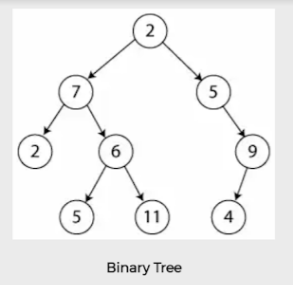
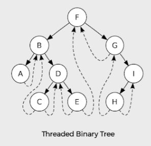
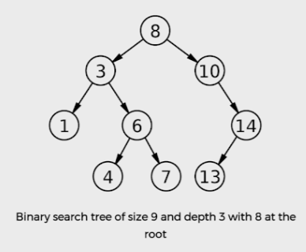
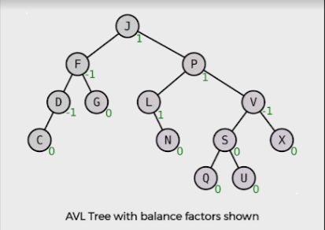

1. Introduction to Trees
What is a Tree?
A tree is a widely used data structure that simulates a hierarchical tree structure, with a root value and subtrees as children, represented as a set of linked nodes. It's the foundation for organized data access.
Key Advantages
- Moderate Access/Search: Faster than a Linked List (especially BSTs).
- Moderate Insertion/Deletion: Faster than static Arrays.
Real-World Uses
- File System Structure (directories/subdirectories).
- DOM Structure (HTML page rendering).
- Router Algorithms (efficient path finding).
2. Terminology Used in Trees
| Term | Definition |
|---|---|
| Root Node | The first node in a tree. |
| Parent Node | The predecessor of any node. |
| Child Node | The descendant of any node. |
| Leaf Node | A node that does not have a child. (External Node). |
| Internal Node | A node which has at least one child. |
| Depth | The number of edges from the Root Node to a specific node. |
| Height | The number of edges on the longest path from a node down to a leaf. |
| Degree | The total number of children of a node. |
Positional Terminology Diagram

Diagram illustrating the core positional terms of a tree (tree_image_12.png).
3. Types of Trees
A. Binary Tree
A special type of tree in which every node can have a maximum of 2 children: the left child and the right child.
Representation & Sub-Types:
Threaded Binary Tree:
A binary tree where null left child pointers point to its in-order predecessor, and null right child pointers point to its in-order successor.
B. Binary Search Tree (BST)
A Binary Tree that satisfies the binary search property: left child value < parent value < right child value.
Operations Summary:
- Searching: Fast, by following the left/right rules recursively.
- Insertion: Insert new node at the proper leaf position.
- Deletion: Requires special handling for nodes with two children (using the in-order successor).
C. Multiway Search Trees
Can have $m-1$ values per node and $m$ children (where $m$ is the order).
B-Trees
- Specialized $M$-way tree for disk access. Designed for $O(\log n)$ performance.
B+ Trees
- Internal nodes only contain keys; all records are stored at the leaf level. Ideal for file management.
D. AVL Tree (Self-Balancing)
A self-balancing BST where the Balance Factor (height difference between subtrees) must be restricted to $\{-1, 0, +1\}$.
Rebalancing
Achieved through rotations (LL, RR, LR, RL) when the balance factor is violated, preserving order and balance.
4. Binary Tree Traversals
The three main methods define the order in which the Root, Left child, and Right child are visited.
1. Inorder
Order: [Left - Root - Right]
Use: Retrieves elements in sorted order from a BST.
void inorder_traversal(struct node* root) {
if (root != NULL) {
inorder_traversal(root->left);
printf("%d ", root->data);
inorder_traversal(root->right);
}
}2. Preorder
Order: [Root - Left - Right]
Use: Useful for creating a complete copy of the tree structure.
void preorder_traversal(struct node* root) {
if (root != NULL) {
printf("%d ", root->data);
preorder_traversal(root->left);
preorder_traversal(root->right);
}
}3. Postorder
Order: [Ledt - Right - Root]
Use: Often used for deleting a tree from bottom-up.
void postorder_traversal(struct node* root) {
if(root != NULL) {
postorder_traversal(root->left);
postorder_traversal(root->right);
printf("%d ", root->data);
}
}5. Complete C Code Implementation (BST)
Full, runnable code for Binary Search Tree creation, insertion, and inorder traversal, demonstrating core operations.
#include <stdio.h>
#include <stdlib.h>
// Define the structure for a tree node
struct node
{
int data;
struct node* left;
struct node* right;
};
// Function to create a new node
struct node* createNode(int value) {
// Allocate memory for the new node
struct node* newNode = (struct node*)malloc(sizeof(struct node));
newNode->data = value;
newNode->left = NULL;
newNode->right = NULL;
return newNode;
}
// Function to insert a new node into the BST
struct node* insert(struct node* root, int data)
{
// If the tree is empty, return a new node
if (root == NULL)
return createNode(data);
// Otherwise, recur down the tree
if (data < root->data)
root->left = insert(root->left, data);
else if (data > root->data)
root->right = insert(root->right, data);
// Return the (unchanged) node pointer
return root;
}
// Function for Inorder Traversal (Left -> Root -> Right)
// Prints nodes in ascending (sorted) order.
void inorder(struct node* root){
if (root != NULL) {
inorder(root->left);
printf("%d -> ", root->data);
inorder(root->right);
}
}
// Driver program example
int main(){
struct node *root = NULL;
// Build the tree
root = insert(root, 8);
insert(root, 4);
insert(root, 6);
insert(root, 3);
insert(root, 32);
insert(root, 13);
insert(root, 16);
insert(root, 2);
printf("BST Inorder Traversal (Sorted order of nodes):\n");
inorder(root);
printf("NULL\n");
return 0;
}